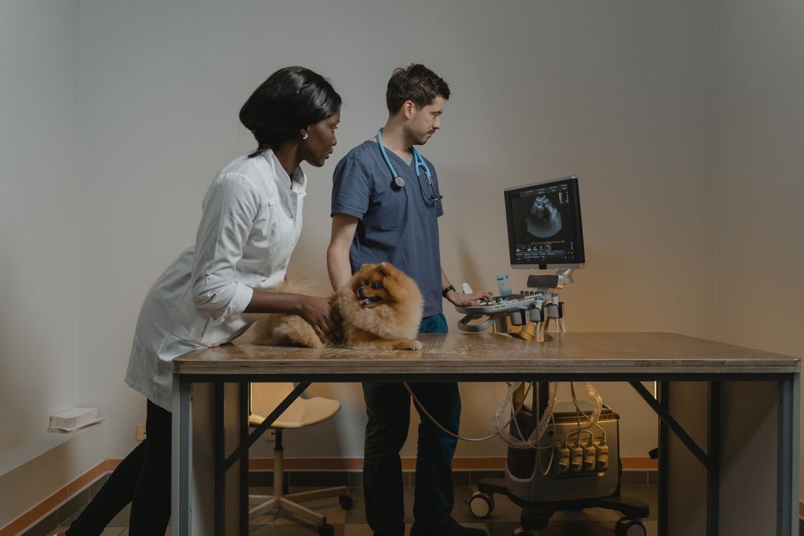
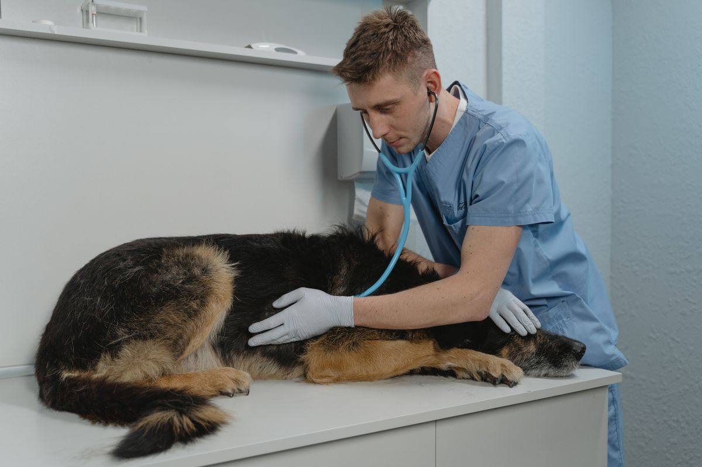
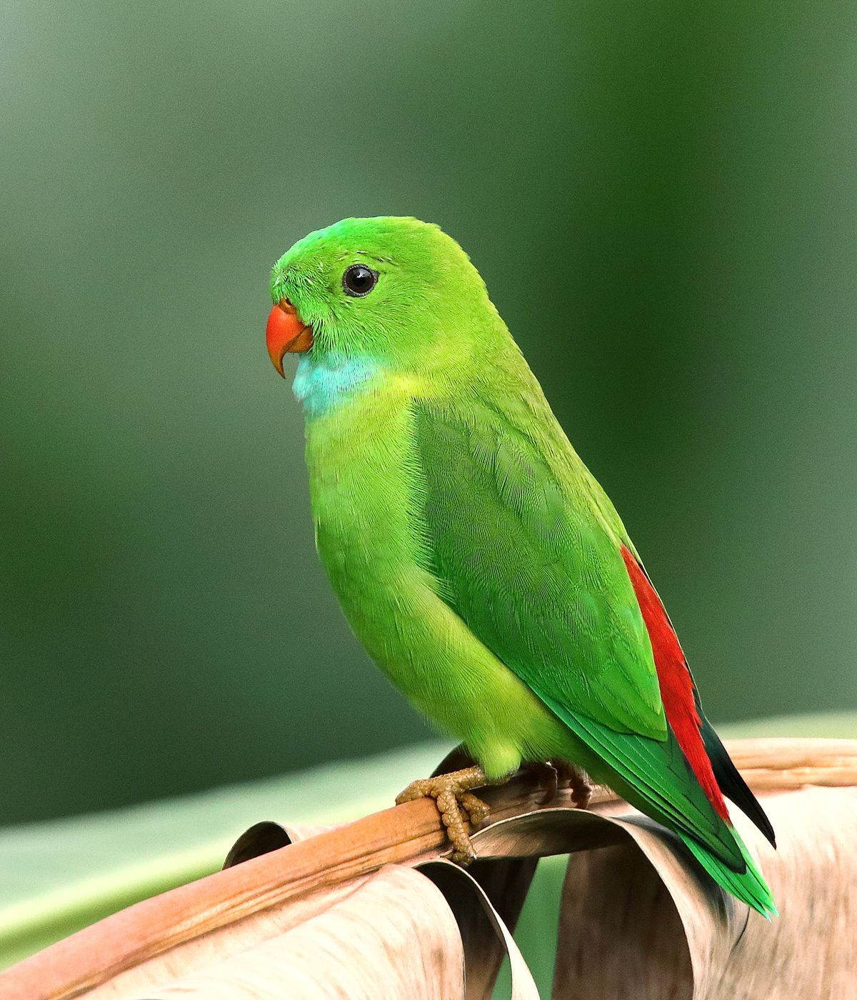
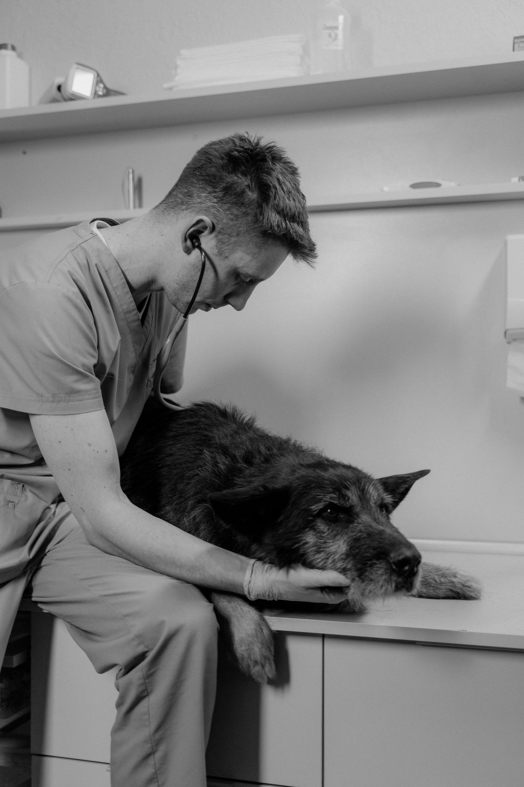
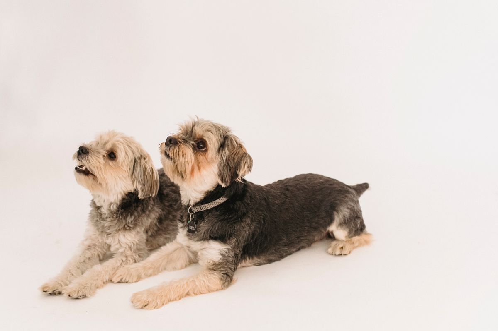
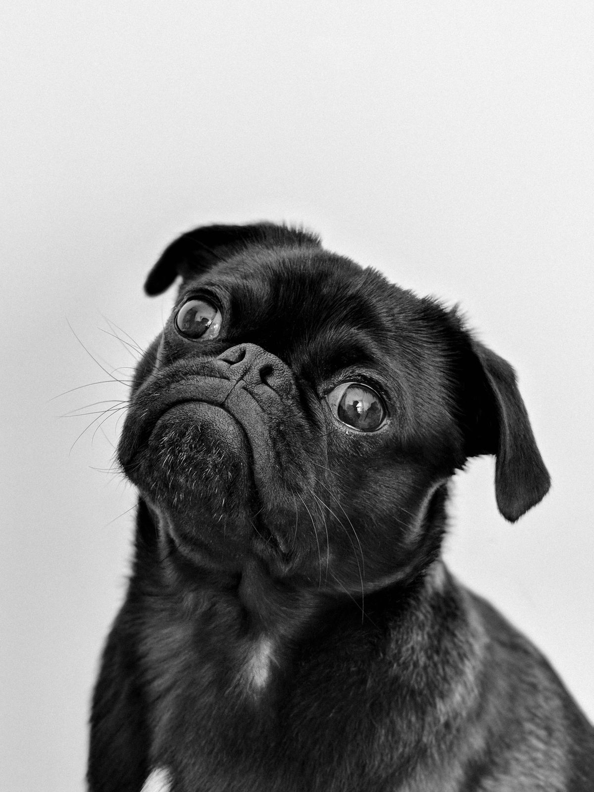
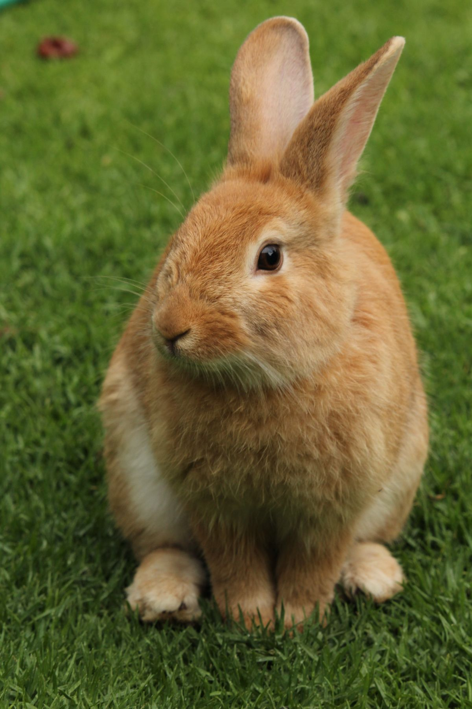

جراحی تخصصی حیوانات خانگی
مرکز تخصصی جراحی حیوانات خانگی؛ جراحی با کادر متخصص و تجهیزات لازم، برای سگ و گربه و سایر حیوانات خانگی.
کلینیک دامپزشکی جانا در سعادتآباد تهران — جراحی تخصصی حیوانات خانگی، بستری و ICU، پرندگان و حیوانات اگزوتیک و آزمایشگاه، با کادری متخصص. فرم رزرو نوبت را پر کنید تا برای هماهنگی با شما تماس بگیریم.

خدمات کلینیک دامپزشکی جانا برای حیوان خانگی شما در سعادتآباد و اطراف آن؛ از جراحی تخصصی تا بستری، مراقبت ویژه و آزمایشگاه.

مرکز تخصصی جراحی حیوانات خانگی؛ جراحی با کادر متخصص و تجهیزات لازم، برای سگ و گربه و سایر حیوانات خانگی.

بستری و مراقبت ویژه (ICU) برای حیواناتی که بعد از جراحی یا در شرایط حساس، به مراقبت پیوسته نیاز دارند.

معاینه و درمان پرندگان و حیوانات اگزوتیک؛ حیواناتی که به دانش و تجربه ویژه نیاز دارند، اینجا پذیرش میشوند.
آزمایشگاه کلینیک برای بررسیهای تشخیصی؛ تا علت مشکل حیوان شما دقیقتر و سریعتر مشخص شود.

جانا در سعادتآباد تهران فعالیت میکند؛ با تمرکز روی جراحی تخصصی، بستری و ICU، پرندگان و اگزوتیک و آزمایشگاه — و با کادر متخصص، کنار شما و حیوان خانگیتان است.
تخصص اصلی جانا جراحی است؛ جراحی حیوان خانگی شما به تیمی سپرده میشود که کار هر روزشان همین است.
اگر حیوان شما بعد از جراحی یا در شرایط حساس به مراقبت پیوسته نیاز داشته باشد، لازم نیست جای دیگری ببریدش.
طوطی، پرنده و حیوانات اگزوتیک — حیواناتی که همه کلینیکها قبولشان نمیکنند — در جانا معاینه و درمان میشوند.
صفحه اینستاگرام ما @jana_pet_clinic با بیش از ۲۵٬۸۰۰ دنبالکننده، هر روز تازهترینها را منتشر میکند.
سگ، گربه، پرنده و خرگوش — حیوانات خانگی با هر شکل و اندازهای در کلینیک جانا معاینه و درمان میشوند.





فرم رزرو همین صفحه را پر کنید؛ نوع حیوان، خدمت موردنیاز و توضیحات را بنویسید.
با شما تماس میگیریم و درباره وضعیت حیوان و زمان مراجعه گفتوگو میکنیم.
در ساعت هماهنگشده به کلینیک بیایید؛ حیوان شما معاینه میشود و در صورت نیاز آزمایش انجام میگیرد.
درمان — از جمله جراحی یا بستری در صورت نیاز — انجام میشود و وضعیت حیوان پیگیری میشود.
تهران، سعادتآباد، بلوار کوهستان، بین میدان کتاب و مجتمع تجاری اپال، پلاک ۴۰.
ساعت کاری کلینیک از ۲ تا ۹ شب است. برای هماهنگی میتوانید با شماره ۰۲۱۲۲۳۵۹۳۲۶ تماس بگیرید.
جراحی تخصصی حیوانات خانگی، بستری و ICU، معاینه و درمان پرندگان و حیوانات اگزوتیک، و آزمایشگاه.
فرم رزرو نوبت همین صفحه را پر کنید یا با شماره ۰۲۱۲۲۳۵۹۳۲۶ تماس بگیرید. بعد از ثبت درخواست، برای هماهنگی با شما تماس میگیریم.
صفحه اینستاگرام ما @jana_pet_clinic است؛ تازهترینها را هر روز آنجا منتشر میکنیم.
فرم را پر کنید؛ برای گفتوگو و هماهنگی با شما تماس میگیریم. اگر ترجیح میدهید مستقیم صحبت کنیم، تماس بگیرید:
۰۲۱ - ۲۲۳۵ ۹۳۲۶ اینستاگرام: @jana_pet_clinic